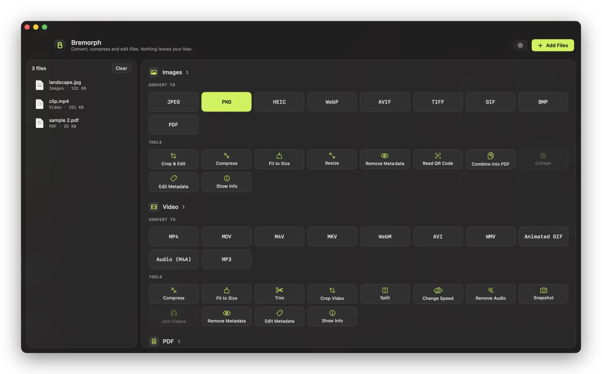
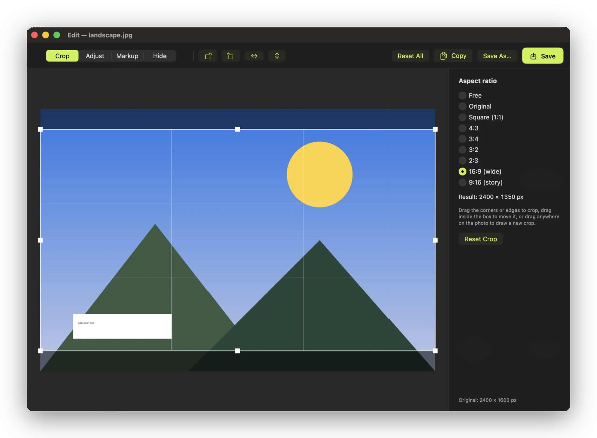
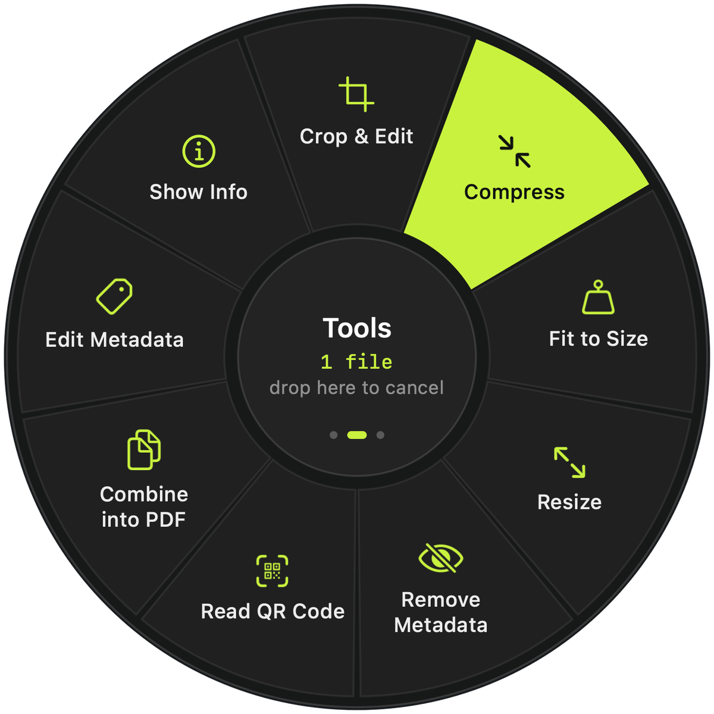
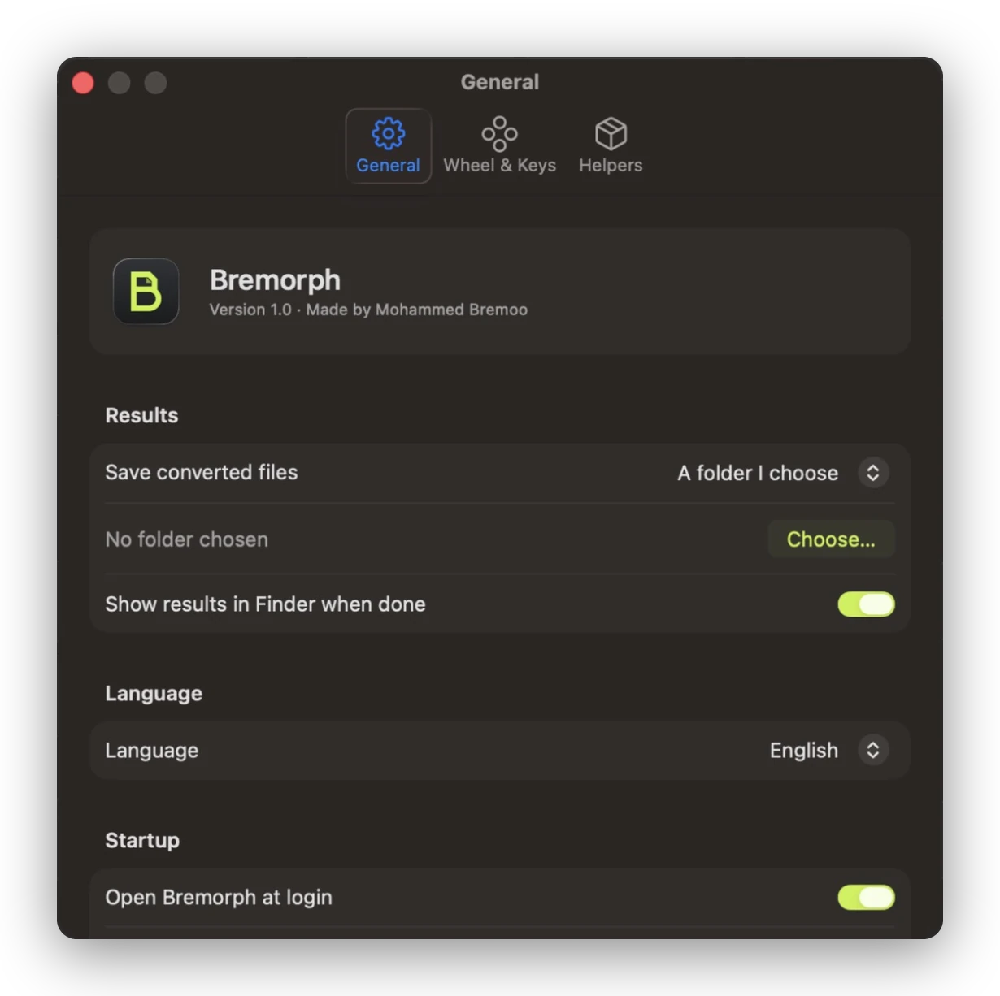

Crop, mark up, hide
Crop to common ratios, draw arrows and text, and cover faces or account numbers before you share a screenshot.
A file converter for macOS
Start dragging a file, hold a key, and drop it on the format you want. Bremorph saves the result next to the original. Nothing is uploaded.
Free and open sourcemacOS 13 or laterEnglish and Arabic
Try the wheel
Pick a key, then click a slice. On your Mac you'd drop the file on it.
How it works
Any file in Finder or on your desktop. Several files at once works too.
⇧ shows formats, ⌘ shows tools, ⌃ shows actions like AirDrop or ZIP. A wheel opens under your pointer.
The new file appears next to the original. Drop it in the middle if you change your mind.

Beyond converting
95 actions in all. These are the ones people reach for most.
Crop to common ratios, draw arrows and text, and cover faces or account numbers before you share a screenshot.
A form wants an image under 2 MB? Type the size and Bremorph keeps the best quality that fits. Works for video and PDFs too.
Reorder, rotate, delete and merge pages, or pull out only the ones you need.
Edit titles, dates and keywords, or strip GPS location from photos before you post them. Photos aren't re-encoded.
Every action also runs from the command line, for example Bremorph --run vidWEBM clip.mp4.
The whole app is translated, with a right-to-left layout in Arabic and correct Arabic plurals.



Formats
.mkvDashed formats need ffmpeg or LibreOffice, both free. Bremorph finds them automatically.
Privacy
Bremorph has no network code. It converts with macOS's own frameworks, and with ffmpeg or LibreOffice if you install them, which run locally too. There's no account and no upload limit.
Get Bremorph
Unzip it and move Bremorph to Applications. It lives in the menu bar, so the wheel works whenever it's running.
The app isn't notarized by Apple yet, so the first time you open it macOS says it can't check it. Go to System Settings → Privacy & Security and click Open Anyway.
You need Apple's Command Line Tools. Xcode itself isn't required.
For MKV, WebM, MP3 and more: brew install ffmpeg